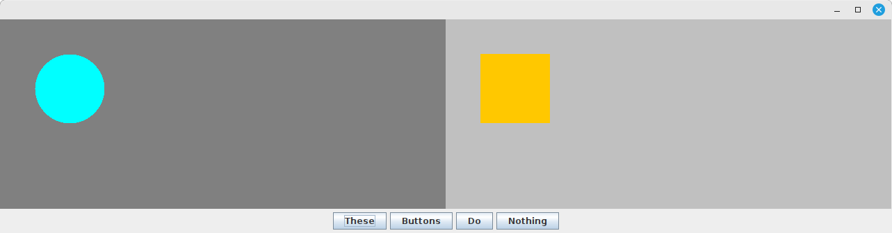

Week 2
I recommend working on these with the other people at your table. We will take breaks to review each problem before moving on to the next one.
Problem 1: Writing a Class
Write a class that models a circle. It should include the following:
- Instance variables
- x and y of the center of the circle
- radius
- Constructor
- A constructor that takes initial values for the x, y, and radius as parameters
- Methods
- Getter methods that return the circle's instance variables
- No setter methods (our circle is immutable)
- Getter methods that calculate and return the circle's area and circumference
- Area is equal to PI (
Math.PI) multiplied by the radius squared - Circumference is equal to 2 multiplied by PI multiplied by the radius
- Area is equal to PI (
Problem 2: Converting a Program to OOP
Rewrite the program below to use your circle class wherever possible. Convert
the static methods (other than main) to instance (non-static) methods in your
circle class.
import java.util.Scanner;
public class CircleProgram {
public static void main(String[] args) {
Scanner input = new Scanner(System.in);
System.out.println("Enter the coordinates and radius of Circle A.");
double aX = input.nextDouble();
double aY = input.nextDouble();
double aRadius = input.nextDouble();
System.out.println("Enter the coordinates and radius of Circle B.");
double bX = input.nextDouble();
double bY = input.nextDouble();
double bRadius = input.nextDouble();
System.out.println("Circle A: " + circleToString(aX, aY, aRadius));
System.out.println("Circle B: " + circleToString(bX, bY, bRadius));
if (intersects(aX, aY, aRadius, bX, bY, bRadius)) {
System.out.println("The circles intersect.");
} else {
System.out.println("The circles do not intersect.");
}
input.close();
}
public static boolean intersects(
double x1, double y1, double r1, double x2, double y2, double r2) {
double dx = x1 - x2;
double dy = y1 - y2;
double distance = Math.sqrt(dx * dx + dy * dy);
return distance < r1 + r2;
}
public static String circleToString(double x, double y, double radius) {
double area = Math.PI * radius * radius;
double circumference = 2 * Math.PI * radius;
return String.format(
"Center (%.2f, %.2f), Radius %.2f, Area %.2f, Circumference %.2f",
x, y, radius, area, circumference);
}
}
Problem 3: Designing a Class
The school has asked you to write a new program to manage their QCard system (https://www.qu.edu/one-stop-student-administrative-services/qcard/). To get started, you will design a class to represent a student's QCard account.
Write a list of properties and methods you might want to include in this QCard class. For each property, include the type and a description of the property (what does it represent?). For each method, include the return type, parameters, and a description of what the method does. Do not include getter/setter methods or constructors in your list.
There are many possible answers to this question. Aim for at least three properties and at least three methods, but feel free to go above that if you think of more examples.
Week 3
Setup
Copy the Pet and Main classes below. Run the program and make sure it works
before you continue.
// file: Main.java
public class Main {
public static void main(String[] args) {
Pet a = new Pet();
System.out.println(a.getName());
System.out.println(a.getSound());
}
}
// file: Pet.java
public class Pet {
private String name;
public Pet() {
this.name = "Nameless";
}
public Pet(String name) {
this.name = name;
}
public String getName() {
return this.name;
}
public String getSound() {
return "...";
}
}
Problem 1: Questions
Answer the following questions about the classes:
- Identify at least one example of the following in the above code:
- constructor definition
- instance method definition
- instance variable declaration
- initializing a variable
- instantiating an object
- constructor invokation
- instance method invokation
- Look at the alternative
Petclass below without putting it in your editor. What problems can you identify with this class? Your editor can identify these problems quite easily, but I want you to see how many you can recognize from the previous lecture.
public class Pet {
private String name, sound;
public Pet() {
this("Nameless", "...");
}
public Pet(String name) {
this(name, "...");
}
public Pet(String sound) {
this("Nameless", sound);
}
public Pet(String name, String sound) {
name = name;
sound = sound;
}
public String getName() {
return name;
}
public String getSound() {
return sound;
}
@Override
public void toString() {
System.out.println(String.format("Pet[name=%s, sound=%s]", name, sound));
}
}
Problem 2: Extending Pet
Write two subclasses of Pet. Each subclass should be a different type of
animal (such as cat and dog, but it's up to you). Your subclasses should each
include the following:
- A parameterized constructor that sets the pet's name (remember you can call
one of the
Petconstructors withsuper) - An override of the
getSoundmethod that returns an appropriate sound for that type of animal
Instantiate both of your new classes in the program's main method and print
their name and sound.
Problem 3: Speak
Add a method to the Pet class called speak. This method should print a
message similar to "Fido says 'woof!'". The message must include the name and
sound made by that pet. You should only modify the code in Pet for this part.
After you've added the speak method, try calling it on all three pets in your
main method. Does the output match what you would expect?
Week 4
Work in a group on these practice exercises with up to two other people at your table. If you finish Part 1-3 and email your code to me by the end of class (cc all group members), then everyone who contributed may use this work in their programming projects.
Part 1: Design a Wheels Object
On the whiteboard, design an object out of simple shapes: rectangles, ellipses, lines, and rounded rectangles. Your object must consist of at least four shapes and represent part of another object. For example, you could design a wheel, tree branch, flower, fencepost, or window.
Part 2: Code a Wheels Object
Write a class for your object. This class must include the following:
- instance variables for all of its component shapes
- a constructor that instantiates the component shapes and initializes any of their relevant properties
- a method to set the object's location and reposition all of the component shapes correctly
- a method to change the object's color, which recolors at least one of the component shapes
Part 3: Demo Program
Create a wheels program that displays two instances of your object. Use the setLocation and setColor methods to position an recolor those objects so we can tell them apart.
If you have extra time, feel free to design and code a second object that uses the first object as a component. If this extra work is included on the email, then everyone in the group may also use it in their own projects.
Credit
To credit everyone who contributed, you can include a comment like the following at the top of any code created during this activity:
/**
* Designed and written on 2025/02/11 during class
*
* Original authors: (list the names of everyone who contributed)
*
* (if you make further changes/additions later, feel free to note these as
* well, but this is optional)
*/
Again, make sure your group emails the code to me by the end of class if you would like to use it in a project.
Week 5
Part 1: Setup
The code below is for a wheels program that displays a window with two buttons and a rectangle. The green button on the right moves the rectangle southeast, and the red button on the left moves the rectangle northwest. Add this code to a project, run the program, and make sure it works before you continue.
import java.awt.Color;
public class Main extends wheels.users.Frame {
public Main() {
MovingRectangle rectangle = new MovingRectangle(Color.CYAN, 200, 100, 30, 30);
Button forward = new Button(rectangle, 5, Color.GREEN);
forward.setLocation(150, 50);
Button backward = new Button(rectangle, -5, Color.RED);
backward.setLocation(50, 50);
}
public static void main(String[] args) {
new Main();
}
}
public interface Mover {
void move(int distance);
}
import java.awt.Color;
import java.awt.event.MouseEvent;
public class Button extends wheels.users.Ellipse {
private Mover target;
private int distance;
public Button(Mover target, int distance, Color color) {
super(color);
this.setFrameColor(Color.BLACK);
this.target = target;
this.distance = distance;
}
@Override
public void mousePressed(MouseEvent e) {
target.move(distance);
}
}
import java.awt.Color;
public class MovingRectangle extends wheels.users.Rectangle implements Mover {
public MovingRectangle(Color color, int x, int y, int width, int height) {
super(color);
this.setLocation(x, y);
this.setSize(width, height);
}
@Override
public void move(int distance) {
this.setLocation(this.getXLocation() + distance, this.getYLocation() + distance);
}
}
Part 2: Modify Program
Make the following changes to this program:
- Add two more buttons that move the rectangle farther in each direction.
- Write your own class that implements the
Moverinterface, and replace the rectangle inMainwith an instance of your new class. This object should be composed of multiple shapes and follow a more interesting movement pattern than the rectangle. It's up to you to make up a new pattern. - Add a second parameter to the
movemethod in theMoverinterface and update all other classes accordingly. The rectangle should treat these parameters as horizontal and vertical distances, but the object you designed can interpret them however you'd like.
Week 6
Work in a group on these practice exercises. If you finish Part 1-3 and email your code to me by the end of class (cc all group members), then everyone who contributed may use this work in their programming projects.
Part 1: Design a UI Element
On the whiteboard, design an object the user can interact with by dragging some part of it with the mouse. For example, the resizable rectangle from the previous class.
Part 2: Create a DraggableRectangle Class
Convert the DraggableEllipse class from our previous example into a
DraggableRectangle. You can use either draggable shape for part 3.
Part 3: Code a UI Element
Write a class for the UI element that you designed in Part 1. It must implement
the Draggable interface from last class, and it must contain a draggable
rectangle or ellipse as a component, as shown in the UML diagram below. Create a
demo program to show the UI element in action.
Credit
To credit everyone who contributed, you can include a comment like the following at the top of any code created during this activity:
/**
* Designed and written on 2025/02/26 during class
*
* Original authors: (list the names of everyone who contributed)
*
* (if you make further changes/additions later, feel free to note these as
* well, but this is optional)
*/
Again, make sure your group emails the code to me by the end of class if you would like to use it in a project.
Week 8
Part 1: Swing App
Write a swing application that displays a window with the following properties:
- The window's title is your name.
- The
JFrameincludes aJPanelwith its background color set to your favorite color. Don't use one of the built-in color constants. Use a color picker to find a specific shade of the color that you like and create the color using its hex code. - The window's size is set by giving the panel a preferred size and calling the
JFrame'spackmethod.
Part 2: Layout vs Drawing Panel
Write two versions of a swing application that display three horizontal bars, each a different color. Each bar must be 600 pixels wide and 200 pixels tall. The jframe must fully show each bar when packed.
The first version of this application must include a subclass of JPanel that
creates the bars by drawing three rectangles.
The second version of this application must use regular JPanel instances with
different background colors and a BorderLayout to create the desired result.
Part 3: Drawing Panel
Create a swing application with a drawing panel that displays a planet, moon, or
other object from our solar system. You must draw the object out of shapes and
lines, not by using one of the drawImage methods.
Week 9
Create a Java application that displays the window shown below. Its layout must behave the same when resized as what you see in the video.
The two areas in the center of the application are instances of the
DrawingPanel class provided below. Each one displays a shape that moves to the
position of the mouse cursor when any mouse button is pressed in that panel.
You should create a class for each of the shapes shown in the program. Your
class will need to implement the MouseListener interface so it can receive
mouse events from its panel, and it will need to implement the Drawable
interface (provided below) so it can be displayed by the panel.
The buttons do not have to do anything when clicked. They're only there to give you a reason to use several different layout managers.


import java.awt.Dimension;
import java.awt.Graphics;
import java.awt.event.MouseListener;
import java.util.ArrayList;
import javax.swing.JPanel;
public class DrawingPanel extends JPanel {
// Collection of drawables that can dynamically grow as we add to it
private ArrayList<Drawable> drawables;
public DrawingPanel() {
setPreferredSize(new Dimension(400, 600));
drawables = new ArrayList<>();
}
public void addDrawable(Drawable d) {
drawables.add(d);
repaint();
}
@Override
public void paintComponent(Graphics g) {
super.paintComponent(g);
// Call the draw method of each drawable in our list
for (Drawable d : drawables) {
d.draw(g);
}
}
}
public interface Drawable {
void draw(java.awt.Graphics g);
}